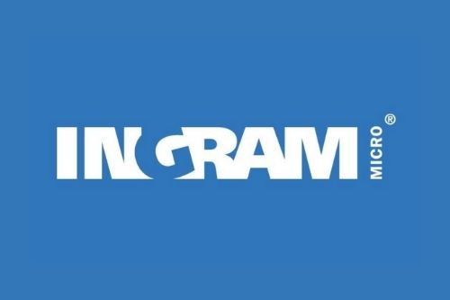

IMOnline
IMOnline is the B2B store Ingram Micro's retail partners use to order electronics stock. At the time, the mobile app was live in 11 countries and the web version in about 26. Partners search for products with prices and availability based on their credit history, order in bulk on credit, and track orders and returns.
I built the product search and product details, country selection, wishlist and order details modules.
IMJarvis
IMJarvis is a web and mobile chatbot that lets Ingram Micro's sales executives look up order details, product details and return status for their customers. It signs them in with the same Active Directory credentials they use at their workstations, and shows them only their own customers' data.
I built it end to end, including the natural-language layer in Dialogflow and the Android application.
Other work
I also built a number of smaller projects and proofs of concept, including a BI reports app for Windows, the BlueIQ Android app, a chatbot for Ingram Micro Mexico, and a React Native proof of concept for Shipwire. I also entered IBM's Call for Code global hackathon with a forest fire monitoring and alerting system built on Watson IoT, IBM Cloudant and image recognition.
Details
- Role
- Android, React Native and Node.js development
- Dates
- July 2017 to September 2018
- Users
- Ingram Micro sales representatives and retail partners
- Links
- ingrammicro.com · IMOnline on Google Play